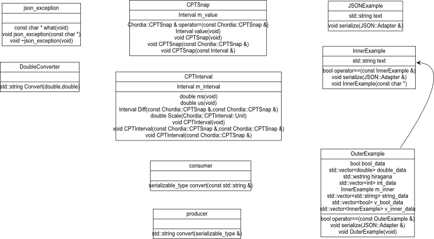

ESJ is a JSON mapper for C++ with modest compiler requirements (No C++11) and zero reliance on 3rd party libraries. It is a very light-weight, easy to use system for inter-operating with web and database services. ESJ can be quickly added to existing code thus generating robust and well-formed JSON data.
JSON (Javascript Object Notation) has become the format of choice for Web based data exchange. JSON is very expressive, easy to parse and read, and of course, has an extremely good fit with the Javascript language itself. In addition to its ubiquity in AJAX (or more accurately AJAJ) contexts, JSON is also a greate fit with Web-socket based communication.
Less obviously perhaps, JSON is also very useful for persistant storage in suitably enabled databases. See PostgreSQL and MonetDB for two excellent examples of JSON database support.
Possibly more unusually, the code has been deployed in embedded environments (via mbed on Freescale ARM Cortex-M4 K64F parts), greatly simplifying Web-socket data exchange for 'Internet of Things' devices.
The attached ZIP file includes projects for Visual Studio (2012) and XCode (Clang). The code is also warning free with g++, the on-line mbed compiler, as well as with the Keil ARM compiler
The code is also hosted on Github. If you have any contributions or fixes you'd like to share please do so via the ESJ repository.
For those unfamiliar with JSON do visit http://www.json.org to see the language specification and links to a great variety of other resources, including language bindings, useful documentation, tools and the like.
Another extremely useful web resource is the JSON "lint" tool at http://jsonlint.com/. This proved invaluable during the development of ESJ, so thanks to all concerned.
Let us start with the canonical example for JSON serialization.
//-----------------------------------------------------------------------------
// Code support required for serialization.
class JSONExample
{
public:
// to be JSON'ised
std::string text;
public:
// each class requires a public serialize function
void serialize(JSON::Adapter& adapter)
{
// this pattern is required
JSON::Class root(adapter,"JSONExample");
// this is the last member variable we serialize so use the _T variant
JSON_T(adapter,text);
}
};
#include "json_writer.h"#include "json_reader.h"void serialize(JSON::Adapter& adapter)JSON::Class root(adapter,"JSONExample");std::string member called text, we have JSON_T(adapter,text);JSON::producer() and JSON::consumer() functions as below
// demonstrate how to first produce and then consume JSON strings
int main(int argc,char* argv[])
{
// try/catch omitted for brevity
// The JSON enabled class as above
JSONExample source;
source.text = "Hello JSON World";
// create JSON from a producer
std::string json = JSON::producer<JSONExample>(source);
// and then create a new instance from a consumer ...
JSONExample sink = JSON::consumer<JSONExample>(json);
// we are done ...
}
and that is it. The results of the serialization process can be seen below:
{"JSONExample":{"text":"Hello JSON World"}}
That pretty much covers the essentials. Now allow me to put draw a somewhat more detailed picture of the code snippets so far.
In-box support is provided for the following C++ types:
As stated previously, the class needs to implement the serialize function. Members will be serialized when this function is called, with order, not surprisingly, following the order of the declarations. It is imperative the the JSON::Class instance always appear first as it controls some behind the curtains magic required to get object declarations out in the correct JSON format. As ever the use of macros is restricted to one-liners which are used for brevity. Somewhat annoyingly there are 2 macros which are used to add the serialization code for member variables and one needs to ensure they are ordered correctly. The JSON_E (JSON Element) is used for serialization support for all members save the last. Why? A quick look at the resulting JSON shows that code called by JSON_E generates a trailing comma character whilst the JSON_T (JSON Terminator) does not. Thus the requisite pattern of declarations is:
Any code which uses the JSON functions should be wrapped in try/catch blocks to ensure correct exception recovery.
Finally, note that all directly relevant classes and functions are in the JSON namespace.
Very little contemporary code that is Internet related can ignore security issues. In this particular case predictable attack vectors would be malformed or overlong strings for 'buffer-busting' or illegal character sequences that might end up as exectuable code.
The JSON scanner can be set to accept a maximum length string which helps mitigate resource-exhaustion type attacks. Character conversions, notably those from escaped hexadecimal \uXXXX to UTF16 or UTF32 are carefully handled, with the decoder throwing exceptions if there are illegal codepoints or truncated sequences.
The JSON parser, which uses the recursive descent idiom, will obviously consume increasing amounts of stack when presented with a very deeply nested set of encodings. Although this condition is not explicitly checked in the parser, it is extremely easy to add: The JSON::Class constructor actually monitors the nesting of scopes and could throw an exception if an application-specific limit is reached.
No warnings or errors are generated when the test bed is compiled using Visual Studio's Code Analysis mode.
ESJ is implemented as a set of C++ header files. This significantly reduces the complexities of cross-platform tool-chain management and the like. The principle files are of interest are:
json_adapter.h Contains the definition of the interface to, and key streaming functions for the JSON::Adapter serializer code.json_writer.h Contains the implementations of the primitives for writing the supported types into a UTF8 string.json_reader.h Implements the primitives for the reader.json_lexer.h Contains a complete, stand-alone JSON tokeniser (useful in its own right, especially if you are operating in a really resource constrained environment).stringer.h Light-weight and type-safe replacement for sprintf and friends which overloads operator << for creating formatted strings.Principal components with associations rendered in slightly non-standard UML (These diagrams are included in the source distribution as SVG files for better viewing)
Structurally speaking, JSON is written to a ISink derived class by the Writer, in the hierarchy to hand, the sink is a StringSink. JSON is read from an ISource derived class, in this case a StringSource. As their names imply, the internal containers for the JSON content are actually std::strings which will be a very good fit in many cases.
It is worth pointing out that this architecture is also pretty flexible. If, for example, you wish to write your JSON direct to a socket or a file (let us say to avoid potentially large amounts of buffering), then you simply need to inherit from the JSON::ISink class and implement the relevant operator<<() functions as shown in the UML class diagram above.
Subsidiary components:

The main principle at work here is combining a set of free functions, (generically called stream() and all implemented within the adapter class), with another set of overloaded virtual functions implemented within the Reader and Writer classes, both of which inherit from Adapter.
There are overloaded stream() functions for all of the core data types. Then there is a catch-all templated stream which expects its value paramter to implement the serialize() function. It is with this pattern of decomposition that the mechanism works.
// overloaded types for streaming primitives
void stream(Adapter& adapter,std::string& value)
void stream(Adapter& adapter,int& value);
void stream(Adapter& adapter,double& value);
void stream(Adapter& adapter,bool& value);
// templated stream function for all types implementing serialize()
template <typename T> void stream(Adapter& adapter,T& arg)
{
// will fail if not implemented.
arg.serialize(adapter);
}
Along with functions of one-arity there is another overloaded set which will stream key/value pairs. In the case of the writer, the implementations are trivial, simply creating a correctly quoted string when required and appending (or outputting) the result to the destination. For example:
//---------------------------------------------------------------------
// write a key/value pair with optional continuation
virtual void serialize(const std::string& key,std::string& value,bool more)
{
m_content << "\"" << key << Quote() << ':' << Quote();
m_content << Chordia::escape(value) << Quote() << (more ? "," : "");
}
The equivalent read function works in concert with the JSON scanner like so:
//-----------------------------------------------------------------------------
// primitive to read type-checked key/value pair
virtual void serialize(const std::string& key,std::string& value,bool more)
{
// see implementation details in next snippet
GetNext(key,T_STRING,value,more);
}
//-----------------------------------------------------------------------------
// primitive to read type-checked key/value pair as in "count" : 123
void GetNext(const std::string& key,TokenType type,std::string& value,bool more)
{
// expecting a string token for "key"
GetNext(T_STRING);
// checked key name matches parsed value
throw_if(key != m_token.text,"key does not match");
// next token
GetNext(T_COLON);
// get the next token and match type
GetNext(type);
// conversions from text are performed one level further up the stack
value = m_token.text;
// this has to be one of ,]}
if (more)
{
Next();
}
}
//-----------------------------------------------------------------------------
// core type checking primitive. throws if token type not matched
virtual void GetNext(TokenType type)
{
// get the next token from the scanner
TokenType next = Next();
// does the expected token type match? throw if not
throw_if(next != type,"GetNext: type mismatch");
}
The only really tricky bit in the implementation is the code required to support JSON arrays. This is again handled in the adapter and uses the primitives shown in the previous snippets. This is the only case in which reading and writing are asymmetric. Firstly the reader has to correctly handle the case where it encounters an empty array [], so the reader uses the lexer/scanner's peek capabilities to check the next token and procede accordingly:
// expecting "key"
adapter.serialize(key);
// expecting ':'
adapter.serialize(T_COLON);
// and next the opening '['
adapter.serialize(T_ARRAY_BEGIN);
// cope with empty arrays so we need look-ahead here
if (adapter.peek(T_ARRAY_END))
{
// ']'
adapter.serialize(T_ARRAY_END);
}
else
{
// read the contents of the array
}
It is useful to see how the C++ derived JSON is (correctly) represented within a Javascript environment. The image beow shows a JSON string that has been pasted into a Chrome console. The resulting Javascript object (j) is shown in the debugger. Note that the Hiragana string has been correctly translated from its UNICODE representation.

None of the code should be controversial or compiler unfriendly. However users of older versions of Visual Studio may require a stdint.h clone to handle some of the uintN_t typedefs, which appear in some of the UTF8/UTF16/UTF32 conversion functions.
A final word on the example code: This is essentially a set of modest unit tests for each component. There is also a somewhat more complex example test_nesting() that demonstrates and tests the serialization of a pair of more complex classes, one containing a vector of the other. It is the output of this test which generates the JSON shown in the Chrome console above.
Version 1.01 - 24th December 2014